Building a Self-Driving Vehicle in GTA-V Using Deep Learning and a Convolutional Neural Network
Introduction and project background
Artificial intelligence is now widely used to perform tasks that were previously performed by humans. An artificial neural network can be trained to drive a vehicle without any human intervention, creating a safer driving environment. Such vehicles are equipped with hardware such as cameras, radar and LIDAR to collect data in real time. The data is passed into complex neural networks that predict outcomes and control the car. These networks can be built, trained and tested in a realistic 3D environment without putting anyone at risk.
A simple self-driving vehicle can be built in a video game, without any of that hardware. High-quality graphics, different weather conditions, unexpected behaviour from nearby vehicles and varied traffic are a few of the many reasons that make Grand Theft Auto V an excellent choice for building and simulating a self-driving vehicle, as Sentdex demonstrated [1].
The goal of this project is to develop a self-driving vehicle that uses computer vision to navigate highway and city-like environments with different traffic densities. The main objective is to train and test different convolutional neural networks on a self-generated dataset, and to integrate an object detection and localisation algorithm to enable both lateral and longitudinal control.
Training an artificial neural network needs a lot of computation, powerful hardware such as GPUs, and machine learning frameworks such as Keras, TensorFlow or PyTorch. In this project each network is trained on Google Colab, which runs Python in the browser and gives free access to GPUs [2]. All the CNNs are built with Keras, a popular, easy-to-use framework that runs on top of TensorFlow for fast experimentation [3].
Convolutional neural networks
Convolutional neural networks, also known as ConvNets or CNNs, are among the most popular deep learning architectures for computer vision tasks such as object detection, classification and image reconstruction [4]. They are very effective at classifying images because they recognise the general patterns shared within a class. A CNN consists of hidden layers, such as convolutional and pooling layers, connected to a multilayer perceptron, also known as fully connected layers. Figure 1 shows a CNN classifying a handwritten four from the MNIST dataset.
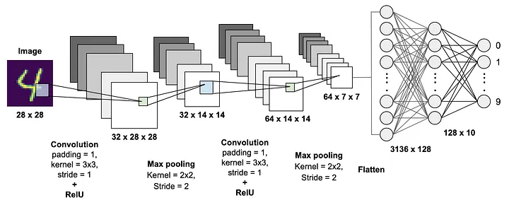
Convolutional layers extract the patterns or common features from images of the same class. An input image can be broken down into its pixels. In a grayscale image each pixel has an intensity from 0 to 255, where 0 is black and 255 is white. Such an input has dimensions [W × H × 1], where W is the width, H is the height and 1 is the depth of a single-channel (grayscale) image. For a colour image the depth increases to three, [W × H × 3], for the red, green and blue intensities at each pixel.
The image becomes a 3-dimensional matrix of width, height and depth, which is passed into a convolutional layer and processed by a kernel matrix, also known as a convolutional filter. The convolution slides the kernel over every pixel of the image and takes the dot product between the image pixels and the kernel [5]. Convolving the input with the filter produces a feature map, which stores a specific feature of the image. Each kernel can be trained to extract a distinct feature, and the kernel values are learned during training by minimising the error function. Figure 2 shows the convolution of matrix I with matrix K to produce I * K.
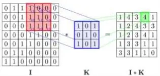
Adding non-linearity is an important operation in an artificial neural network. Figure 3 shows some common nonlinear activation functions used in CNNs.
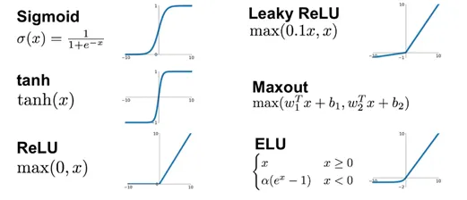
A pooling layer reduces the number of training parameters and the size of the convolved image, which lowers the computational cost of the model while keeping the most important features extracted during convolution. Like convolution, pooling slides a kernel over each location of the image and stores the corresponding value. The three main types are max pooling, average pooling and sum pooling [4]. Figure 4 shows max pooling reducing a 4×4 feature map to 2×2.
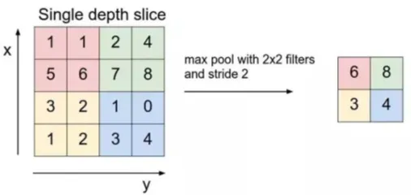
Finally, after all the convolutional operations, the output is flattened into a one-dimensional array, and each element is connected to all the neurons in the next layer. In a deep fully connected network, each neuron in one layer connects to every neuron in the next, as shown in Figure 5. Each connection has its own weight and bias, learned during training through gradient descent [6].
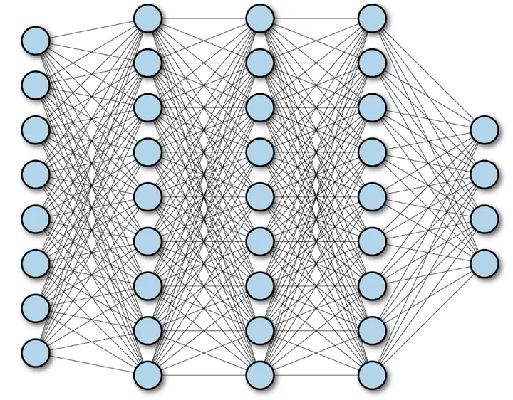
CNN used in this project
Most CNNs are built from these convolutional, pooling and fully connected layers, but the number of layers, the number of filters, the activation functions and the depth differ between architectures. NVIDIA's PilotNet, ResNet-50 and VGG-19 were trained on the self-generated dataset and on a dataset published by Sentdex, then tested in different environments: highway and city, each with and without traffic. PilotNet was selected because of its fast prediction rate (frames per second).
In 2016, NVIDIA published a CNN trained on images from a car's hood camera, paired with the steering angles of a human driver [8]. The training data was collected by driving in various weather and road conditions while recording camera frames and the steering wheel angle. The network's weights and biases were adjusted by minimising the mean squared error through backpropagation. Once trained, the network takes the hood-camera image and outputs the steering angle needed to drive the car.
PilotNet has 9 layers: 5 convolutional layers, 3 fully connected layers and one normalisation layer. The first three convolutional layers use a 5×5 kernel with a 2×2 stride, and the last two use a 3×3 kernel. The extracted feature maps are passed into a fully connected network that predicts the steering angle. Figure 6 shows the order of the layers.
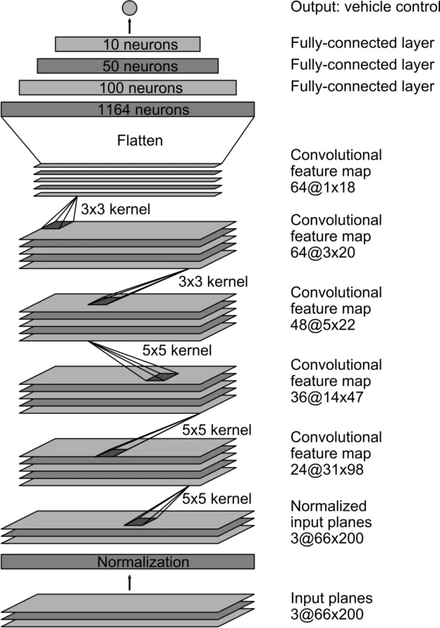
Dataset
1. Generating the data
A real car is steered by turning the steering wheel by some angle. In GTA-V the same can be done with an Xbox controller, which controls both steering and throttle like a real car. The steering angle ranges from −1 (fully left) to 1 (fully right), and the throttle from −1 (no acceleration) to 1 (full acceleration).
Training on such a dataset gives a more realistic self-driving car. The trained network outputs continuous values for steering and throttle, which are passed to a virtual joystick that turns and accelerates the car by that amount.
The custom dataset was generated by driving from a first-person view, so the network is trained on what the vehicle actually sees. This is done by turning on GTA-V's hood camera, as shown in Figure 7. Because of the limited RAM and storage on Google Colab, frames were recorded as 160×120 grayscale images [160 × 120 × 1], each with its steering angle and throttle. After a few hours of driving, the dataset held 100,000 labelled images. It was uploaded to Google Drive, which was mounted in Google Colab for preprocessing and training.

2. Balancing the dataset
Figure 8 shows the distribution of steering angle and throttle in the collected data. Because the car drives straight most of the time, most samples sit near a steering angle of 0. A network trained on this data would be biased toward always driving straight and would perform poorly.
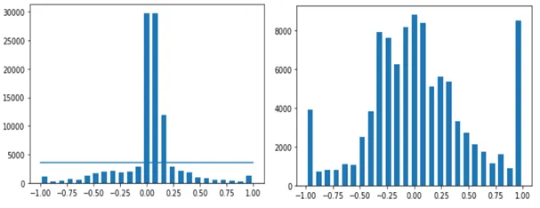
To balance the dataset, samples above a threshold in each bin (an image with its steering and throttle) were removed at random. Here the threshold is 4,000. Figure 9 shows the distributions after balancing.

After balancing, 39,046 images remain (60,954 were removed).
3. Artificially expanding the dataset
39,046 images might not be enough to train the CNN, so the balanced dataset was expanded with image augmentation. Each image was flipped horizontally and its steering angle multiplied by −1. Adding these flipped images doubled the dataset to 78,092 images. Figure 10 shows the distribution of the expanded dataset, and Figure 11 shows an original image and its flipped copy with their steering angles.
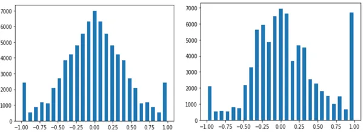
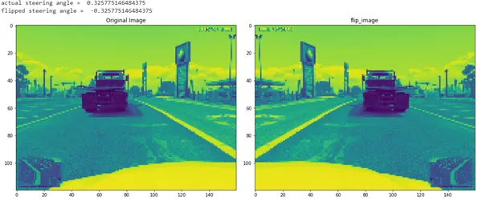
Other augmentations, such as random shifts, brightness and zoom, were applied during training to add variation. This reduces overfitting and improves the model's ability to generalise.
Training and testing PilotNet to predict steering and throttle
Training a CNN is time-consuming and needs a lot of experimentation with parameters to get the best results. Networks can be trained for classification, detection or regression. A validation set is used to measure the network's performance without bias.
The goal is to minimise the loss function, that is, to find its global minimum. Figure 12 illustrates this in 2D. Starting at a random point, compute the slope there. If the slope is positive, move the point left by one step (the learning rate); if it is negative, move it right. Repeating this over many iterations eventually brings the point to a minimum of the function, though it can get stuck in a local minimum instead of the global one.
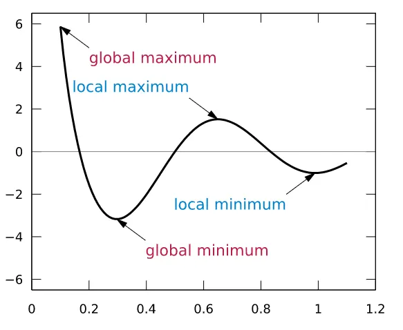
For a complex neural network, the loss can be pictured as a surface in 3D, as in Figure 13. Starting at a random point, the gradient gives the direction of steepest ascent, so multiplying it by −1 gives the direction of steepest descent. Taking a step in that direction and repeating over many iterations converges to a minimum. This process is gradient descent: at each iteration the network computes the error and adjusts its weights and biases to reduce it efficiently.
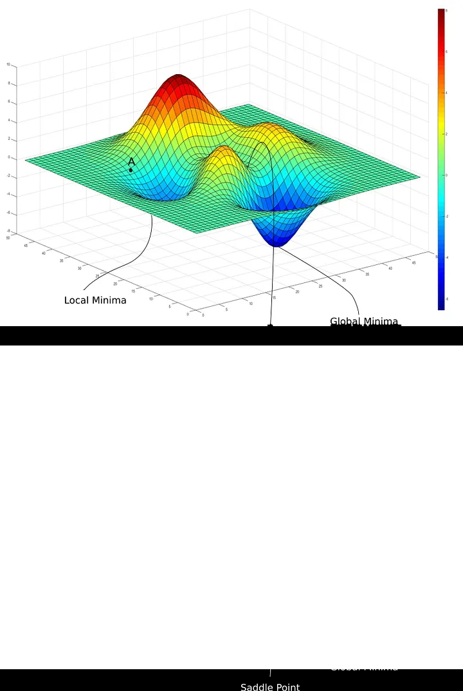
The point can still get stuck in a local minimum. This can be addressed by tuning the learning rate or by decaying it [10], so the network takes larger steps at first and smaller ones later, which lowers the chance of getting stuck. The Adam optimiser (adaptive moment estimation) is an adaptive method that computes an individual learning rate for each parameter [11].
Here, the images and their steering angles and throttle values are fitted as a regression problem, since the outputs are continuous numbers. The original PilotNet architecture predicts the steering angle by regression [8]; one more output neuron was added to predict throttle as well. Adam backpropagates the mean squared error, with a learning rate of 0.001 chosen through experimentation. Of the 78,092 images, 62,474 are used for training and 15,618 for validation. The training images are augmented to help the network generalise, as also suggested in [8].
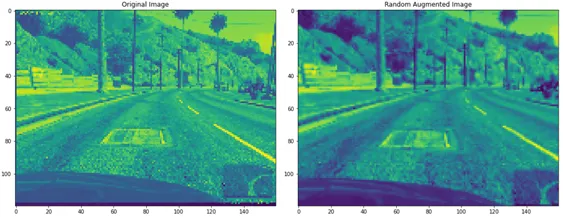
The trained network is tested by running a Python script that captures a frame from the game screen, preprocesses it and passes it to the CNN. The CNN predicts the steering angle and throttle, which are sent to a virtual Xbox controller (vJoy) to drive the vehicle. These steps repeat continuously to drive the vehicle in the game.
Although this network drives reasonably well with behaviour cloning alone, it still makes mistakes, such as frequently colliding with other vehicles without braking.
Object detection and localisation (YOLOv3)
Adding an object detection algorithm can significantly improve the self-driving vehicle's performance. Knowing the exact position of vehicles and pedestrians ahead lets the AI make decisions accordingly. Object detection can also recognise traffic signs, an integral part of a fully autonomous vehicle. You Only Look Once (YOLO) is one of the most popular state-of-the-art real-time object detection systems [12]. Since YOLO was first introduced in 2015, newer versions have made predictions faster and more accurate. This project considers YOLOv3 and YOLOv3-Tiny for fast real-time prediction, integrated with the selected network (PilotNet).
YOLOv3 uses the same idea as the original YOLO: it unifies object detection into a single neural network by dividing the input image into a grid [14]. Each grid cell predicts bounding boxes, and each bounding box predicts 4 coordinates, tx, ty, tw and th [13], where tx and ty relate to the centre x and y, and tw and th to the width and height of the box. The centre, width and height of the bounding box relative to the grid are calculated as follows [13]:
bx = σ(tx) + cx
by = σ(ty) + cy
bw = pw etw
bh = ph eth
where cx, cy is the location of the grid cell; bx, by is the location of the bounding box; pw, ph is the anchor box prior obtained from clustering; and bw, bh are the dimensions of the bounding box.
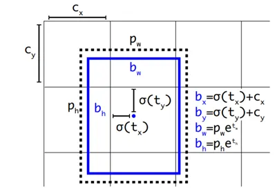
Each bounding box also predicts a label and a confidence score for the object inside it. The output tensor has a fixed size of S × S × (B × 5 + C), where S is the grid size, B is the number of bounding boxes per cell and C is the number of labelled classes [14]. The label with the highest score is the output of each box. Boxes whose confidence falls below a user-defined threshold are discarded.
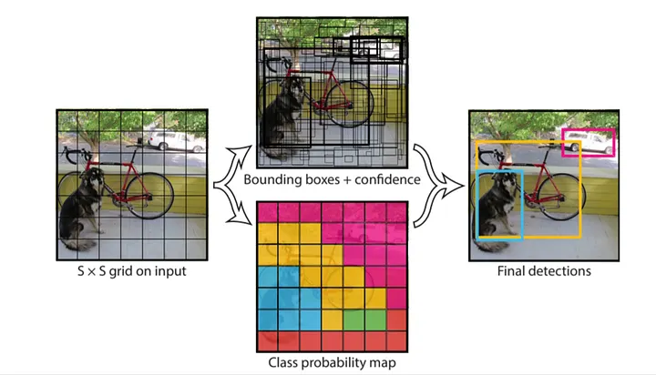
When an image is passed into the trained network, it returns a fixed number of bounding boxes, each with a confidence score for its label. In Figure 16, the bold boxes around the dog, bicycle and truck show the network is confident in those labels, which are above the threshold. The other boxes have low confidence and are discarded, so the dog, bicycle and truck are detected.
YOLOv3 uses binary cross-entropy loss for multi-label classification, which gives the probability that a detected object belongs to each label. This project uses YOLOv3 pretrained on the COCO dataset. From the equations above, the output tensor has a size of
S × S × [3 × (4 + 1) + 80]
where 3 is the number of bounding boxes per cell, 4 is the coordinates predicted by each box (tx, ty, tw, th), 1 is the confidence prediction, and 80 is the number of classes in the COCO dataset [13].
YOLOv3 uses Darknet-53, with 53 convolutional layers, as its feature extractor. Feature extraction works as described in the convolutional neural network section above.
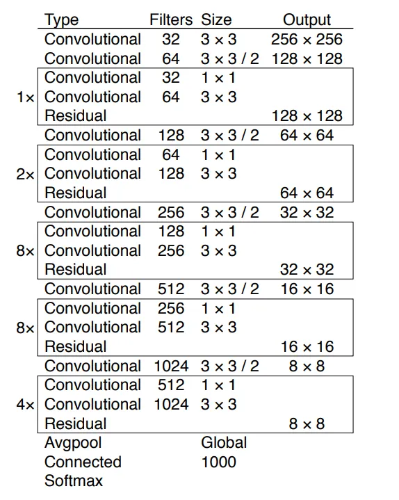
Integrating PilotNet with YOLOv3
YOLOv3 and YOLOv3-Tiny, pretrained on COCO, are used to detect objects in real time. COCO has 80 classes, but for this application only cars, trucks, people, motorcycles, buses, trains and stop signs are considered; other classes such as zebras, apples or oranges are ignored. YOLOv3-Tiny is used because it predicts faster than YOLOv3.
The car also needs to know how far away a detected object is, to slow down or brake accordingly. This is estimated from the diagonal length of the detected object's bounding box, using its width tw and height th:
diagonal length = √(tw2 + th2)
An object far from the car has a short diagonal, and an object close to the car has a long one, as shown in Figure 18. The thresholds for deciding whether an object is too close, close or far were found experimentally.
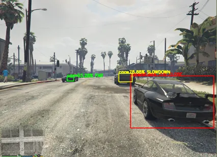
PilotNet and YOLOv3-Tiny are combined in a single script that controls steering and throttle. If a detected object is too close, the throttle is set to −1 (no acceleration), the steering to 0 (no steering) and the brake is applied. If the object is nearby but not too close, the throttle is reduced significantly to slow the car. If it is far, the throttle is reduced slightly.
Testing the integrated system in different scenarios showed that the car tended to stop whenever it detected a vehicle in another lane, an oncoming vehicle, or a parked vehicle close by. Figure 19 shows one case, where the car stopped in the middle of the highway because it detected a car in the next lane.
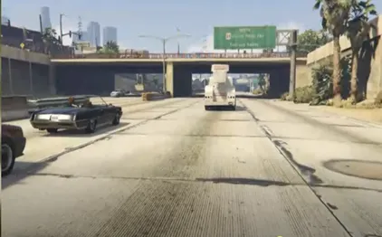
To fix this, a region of interest is applied to the frame passed into YOLOv3-Tiny. The car should stop only when a vehicle or person is very close in front of it. As Figures 20 and 21 show, detection runs only on the centre of the screen, so pedestrians and vehicles in other lanes are not detected, which improves performance.

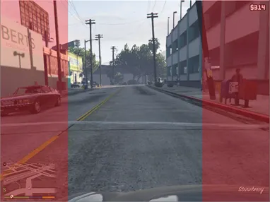
Results: PilotNet + YOLOv3
Comparing the results of the integrated system across different scenarios shows that a self-driving car can be built and simulated with computer vision and deep learning, the approach Tesla mainly uses for its Autopilot system.
Although the car's overall performance was good, more research is needed to make it realistic enough to implement on an actual car.
Further improvements
1. Higher-resolution images and a more diverse dataset
Because of limited resources and memory, the data was collected at low resolution, so some important features may not be extracted by the convolutional layers. Also, because of time constraints, most of the data came from highway driving. Collecting a better, larger and more diverse dataset would help the network generalise to different inputs.
2. CNN + LSTM (recurrent neural network)
Currently PilotNet outputs a steering angle and throttle for each frame independently of its previous outputs. A human driver, by contrast, knows the car's previous state: when making a left turn, they know how far the wheel is already turned and adjust accordingly. Because each prediction is independent, the control looks unsynchronised. Similarly, YOLOv3-Tiny does not know the state of a detected object: whether a vehicle is parked or in the oncoming lane, or whether a person is walking or standing.
Adding a Long Short-Term Memory (LSTM) block, a type of recurrent neural network, to the CNN can solve this. The memory block holds previous predictions, and the next action depends on both the current input and the previous output. Since driving depends on time series and selective memory, an LSTM is a suitable approach for a self-driving car.
Code
GitHub: Autonomous-Self-Driving-Car-GTA-5
References
- H. Kinsley, "Python Plays GTA V," Python Programming Tutorials. pythonprogramming.net
- Google Research, "Colaboratory." research.google.com
- Keras Team, "About Keras." keras.io
- Prabhu, "Understanding of Convolutional Neural Network (CNN): Deep Learning," Medium, 2019.
- K. Patel, "MNIST Handwritten Digits Classification using a Convolutional Neural Network (CNN)," Towards Data Science, 2019. towardsdatascience.com
- B. Ramsundar and R. B. Zadeh, "TensorFlow for Deep Learning," O'Reilly. oreilly.com
- Activation functions figure, miro.medium.com, 2020.
- M. Bojarski et al., "End to End Learning for Self-Driving Cars," arXiv:1604.07316, 2016. arxiv.org
- "Maxima and minima," Wikipedia. wikipedia.org
- A. Kathuria, "Intro to optimization in deep learning: Gradient Descent," Paperspace Blog, 2019. paperspace.com
- V. Bushaev, "Adam: latest trends in deep learning optimization," Towards Data Science, 2018. towardsdatascience.com
- J. Redmon and A. Farhadi, "YOLO: Real-Time Object Detection." pjreddie.com
- J. Redmon and A. Farhadi, "YOLOv3: An Incremental Improvement," arXiv:1804.02767, 2018. arxiv.org
- J. Redmon, S. Divvala, R. Girshick and A. Farhadi, "You Only Look Once: Unified, Real-Time Object Detection," CVPR 2016. ieeexplore.ieee.org